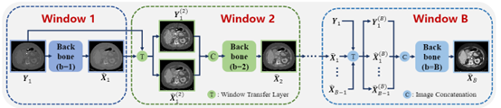
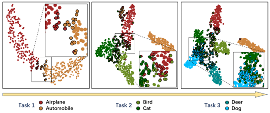

|
Hong Wang (王 红) |
2025年学硕名额有1个，博士名额预计4月中旬可确定。2026年学硕、博士名额均有1个。欢迎自驱力强、数学基础好、编程能力强、具有一定医学背景的同学加入，请提前发邮件联系并附上成绩单和个人简历。团队长期招收访问学生和联合培养学生，欢迎合作联系。
Biography
I am currently an Associate Professor at School of Life Science and Technology, Xi'an Jiaotong University, working with Prof. Jianhua Ma and Prof. Deyu Meng. Previously, I was a senior researcher at YouTu Lab@Tencent, Shenzhen, working with Prof. Yefeng Zheng (IEEE Fellow). I received my Ph.D. degree from School of Mathematics and Statistics, Xi'an Jiaotong University, China, in 2021, under the supervision of Prof. Deyu Meng. Before that, I received my M.Sc degree under the supervision of Prof. Zhaoyang Zhang from School of Information and Electronical Engineer, Zhejiang University, in 2018, and the B.S. degree from School of Communication and Information Engineer, Nanjing University of Posts and Telecommunications, in 2015.
Research Interest
Currently, I work in the field of medical image processing and analysis, including CT/PET/MRI/Endoscopy reconstruction, medical image diagnosis, and multimodal analysis. Specifically, I mainly investigate how to combine model-driven (domain knowledge-driven) method and data-driven deep learning techniques for effective and interpretable image processing. Recently, I focus on the following research topics:- CT/PET/MRI/Endoscopy Reconstruction
- Deep Unfolding Image Restoration
- Bayesian Methods in Image Processing
- Foundation-model-driven Image Restoration
- Explainable Medical Analysis
- Machine Learning (Continual Learning, Federated learning, Multi-task Learning)
Research Experiences

|
Xi'an Jiaotong University, Xi'an, China Associate Professor, Mar. 2025 ~ present Team: Prof. Jianhua Ma and Prof. Deyu Meng |

|
YouTu Lab@Tencent, Shenzhen, China Senior Researcher, Technical Expert (技术大咖), Feb. 2022 ~ Mar. 2025 Supervisor: Prof. Yefeng Zheng (IEEE Fellow) |
|
Jarvis Lab@Tencent, Shenzhen, China Research Intern (Tencent Rhino Bird Elite Talent Program), Sep. 2020 ~ Feb. 2022 Supervisor: Prof. Yefeng Zheng (IEEE Fellow) Honors: No.2 for Tencent Rhino Bird Elite Talent(<0.1%), Best Style Award(<0.1%) |
News
- [03/2025] Our STND for Nasopharyngeal Carcinoma Detection is accepted in The Lancet Digital Health 2025.
- [03/2025] Our FSVG, a simple and better baseline, for visual grounding is accepted in ICME 2025.
- [01/2025] Our AdaW for multiple-window metal artifact reduction is accepted in IEEE TMI 2025.
- [10/2024] Honored to receive "2024 IEEE TMI Distinguished Reviewer".
- [05/2024] Our POCL for continual learning is accepted in ICML 2024.
- [04/2024] Our RER for continual learning is accepted in IEEE TMM 2024.
- [04/2024] Our TRGNet, a controllable rain generator, is available on arXiv.
- [04/2024] Honored to receive "2024 Excellent Doctoral Thesis of Xi'an Jiaotong University".
- [03/2024] Our Fed-CRFD for MRI reconstruction is accepted in IEEE JBHI 2024.
- [11/2023] Honored to be selected into the "9th China Association for Science and Technology Young Talent Promotion Project".
- [08/2023] Our extended OSCNet for CT metal artifact reduction is accepted in TMI 2023.
- [06/2023] Our MEPNet for joint sparse-view reconstruction and metal artifact reduction is accepted in MICCAI 2023.
- [06/2023] Our RAUNA for low-light image enhancement is accepted in TNNLS 2023.
- [03/2023] Our GPCIS for interactive segmentation is selected as a highlight at CVPR 2023 (10% of accepted papers, 2.5% of submissions).
- [03/2023] The dataset ``Synthesized DeepLesion'' has been released at [SynDeepLesion].
Preprint
|
A refreshed similarity-based upsampler for direct high-ratio feature upsampling |
|
 |
Continual Learning for Segment Anything Model Adaptation |
Selected Publications [Full List] (^Co-first author; *Corresponding author)
|
Artificial Intelligence Assisted Detection of Nasopharyngeal Carcinoma on Endoscopic Images: A National Multi-Center Evidence Study |
|
|
A Simple and Better Baseline for Visual Grounding |
|
|  |
Adaptive Weighting based Metal Artifact Reduction in CT images |
|
Mitigating Catastrophic Forgetting in Online Continual Learning by Modeling Previous Task Interrelations |
|
|  |
Relational Experience Replay: Continual Learning by Adaptively Tuning Task-wise Relationship |
|
Cross-Modal Vertical Federated Learning for MRI Reconstruction |
|
 |
OSCNet: Orientation-Shared Convolutional Network for CT Metal Artifact Learning |
 |
MEPNet: A Model-Driven Equivariant Proximal Network for Joint Sparse-View Reconstruction and Metal Artifact Reduction in CT Images |
 |
Low-light Image Enhancement by Retinex-based Algorithm Unrolling and Adjustment |
 |
A Deep Weakly Semi-Supervised Framework for Endoscopic Lesion Segmentation |
 |
Interactive Segmentation as Gaussian Process Classification |
 |
RCDNet: An Interpretable Rain Convolutional Dictionary Network for Single Image Deraining |
 |
InDuDoNet+: A Deep Unfolding Dual Domain Network for Metal Artifact Reduction in CT Images |
 |
KXNet: A Model-Driven Deep Neural Network for Blind Super-Resolution |
| |
Orientation-Shared Convolution Representation for CT Metal Artifact Learning |
 |
Adaptive Convolutional Dictionary Network for CT Metal Artifact Reduction |
 |
Survey on Rain Removal From Videos or A Single Image |
 |
DICDNet: Deep Interpretable Convolutional Dictionary Network for Metal Artifact Reduction in CT Images |
 |
InDuDoNet: An Interpretable Dual Domain Network for CT Metal Artifact Reduction |
 |
From Rain Generation to Rain Removal |
 |
A Model-driven Deep Neural Network for Single Image Rain Removal |